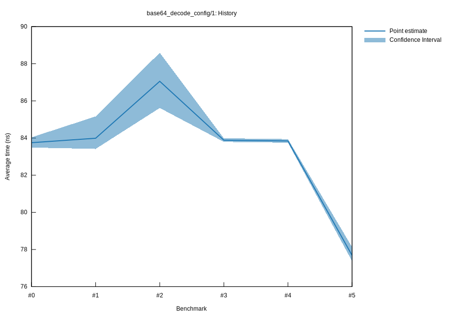

# 32022-10-15T17:18:32+03:00
|
Lower Bound |
Estimate |
Upper Bound |
| Value: |
83.79ns |
83.88ns |
83.99ns |
| Throughput: |
45.52MiB/s |
45.48MiB/s |
45.42MiB/s |
| Change in Value: |
-7.5824% |
-4.4447% |
-1.8171% |
| Change in Throughput: |
+8.2045% |
+4.6515% |
+1.8507% |
No change in performance detected.
# 22022-10-15T16:52:44+03:00
|
Lower Bound |
Estimate |
Upper Bound |
| Value: |
85.62ns |
87.05ns |
88.59ns |
| Throughput: |
44.55MiB/s |
43.82MiB/s |
43.06MiB/s |
| Change in Value: |
+2.4857% |
+5.2415% |
+9.1613% |
| Change in Throughput: |
-2.4254% |
-4.9805% |
-8.3925% |
No change in performance detected.
# 12022-10-08T17:29:32+03:00
|
Lower Bound |
Estimate |
Upper Bound |
| Value: |
83.42ns |
83.99ns |
85.16ns |
| Throughput: |
45.73MiB/s |
45.42MiB/s |
44.79MiB/s |
| Change in Value: |
-0.2823% |
+0.1701% |
+0.8163% |
| Change in Throughput: |
+0.2831% |
-0.1698% |
-0.8097% |
Change within noise threshold.
# 02022-10-08T17:10:18+03:00
|
Lower Bound |
Estimate |
Upper Bound |
| Value: |
83.49ns |
83.75ns |
84.04ns |
| Throughput: |
45.69MiB/s |
45.55MiB/s |
45.39MiB/s |